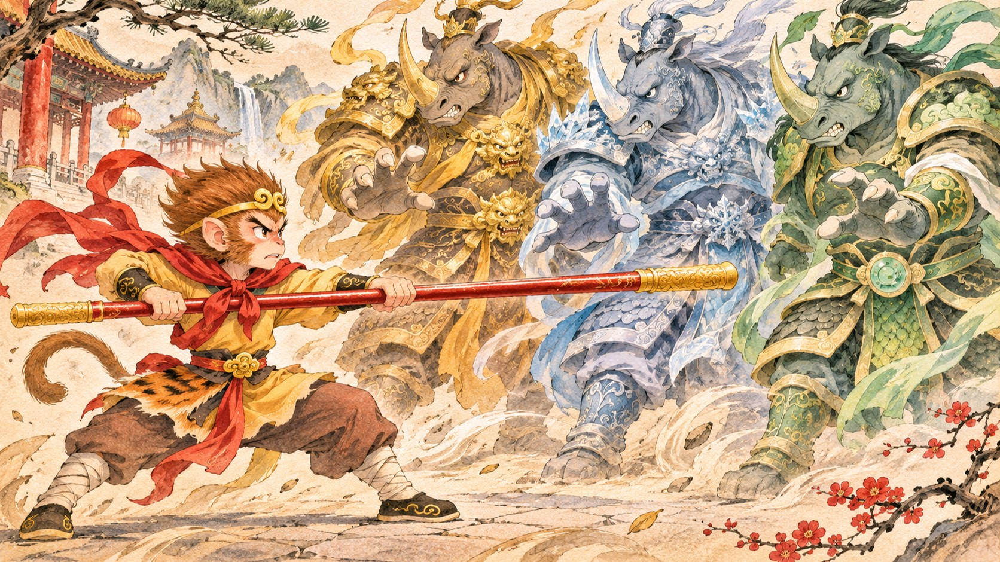

《西遊記》第 129 集：野牛大陣
一、玄英洞外敲金石，大聖怒討假佛魔
上期咱們講到，青龍山玄英洞內，辟寒大王、辟暑大王、辟塵大王捉了唐僧，把他押到面前審問。
辟寒大王問道：
「你是哪裡來的和尚？怎麼見了佛像不躲？」
唐僧回答：
「貧僧從東土大唐而來，到天竺國大雷音寺拜佛求經。見大王變成了佛像，貧僧肉眼凡胎不辨真偽，衝撞了大王。」
妖王說道：
「哦，是個取經的。從大唐到我這天竺地界，路途遙遠。我問你，你們有幾個人呢？都叫什麼名字呀？」
唐僧答道：
「阿彌陀佛，貧僧自幼在金山寺為僧，觀音菩薩賜我法名三藏。我有三個徒弟：大徒弟姓孫，名悟空，號行者，曾經是齊天大聖。」
俗話說：「人的名，樹的影。」群妖一聽「齊天大聖」這四個字，都是一驚！
辟寒大王探身問道：
「這齊天大聖，可是五百年前大鬧天宮的那個？」
唐僧連忙說道：
「正是，正是！我二徒弟姓豬，名悟能，號八戒，乃天蓬元帥轉世。三徒弟姓沙，名悟淨，乃捲簾大將下凡。」
辟塵大王聽了，對辟寒大王說道：
「大哥，幸好沒上來就吃了他！這三個徒弟可不好惹呀，咱們得先滅了他們，然後才能踏踏實實吃他們的師父。」
二、三尊犀怪各披掛，鉞斧藤牌戰行者
辟寒大王把手往桌子上一拍：
「三弟說得不錯！來呀！」
小妖們齊聲應道：
「有！」
辟寒大王喝令道：
「把這唐三藏押了下去，咱們點兵出征！」
小妖們齊聲答道：
「是！」
孫悟空在玄英洞門口等了半天，忽然聽到洞裡響起了一陣戰鼓聲。緊接著，大門轟然洞開，湧出了一群野牛精、水牛精、黃牛精，大概有三千上下。他們各持兵器，擺出陣形，在陣前大纛旗下站著為首的三個妖王。
只見他們三個，簡直長得像一個模子裡刻出來的：臉色鐵黑中透著青藍，青藍裡透著暗紅，在月光下搖搖頭，這臉色似乎在不斷地變化。鼻樑上長著兩隻尖角，前面長，後面短，鋒利如刀；兩隻耳朵不大，尖尖地立在頭頂前後晃動；兩隻小眼睛滴溜溜亂轉，金光四射。
這三個妖王長得一模一樣，可穿著完全不同。
為首的站在中間，身穿貂皮大氅，頭頂狐皮軟帽，臉上熱氣蒸騰，手使一柄宣花大斧，背後大旗繡著四個大字——「辟寒大王」。
站在左手邊的，渾身上下罩著一片薄紗，鼻樑上的角尖上掛著冰稜，從頭到腳散發著一股寒氣，手使一柄鋸齒飛鐮刀，背後大旗繡著四個大字——「辟暑大王」。
站在右手邊的，吼聲如巨雷，眼閃似明燈，白衣、白褲、白鞋、白帽，渾身上下一塵不染。站在月光下，這一身白反著光，甭提多刺眼了！他手裡的兵器好生奇怪，遠遠看去，像是一根棒子，兩頭各有一個圓疙瘩，棒子烏黑油亮，不像是金屬，也不像是木頭。
孫悟空不知這是什麼東西，可是凱叔知道，這叫「千年疙瘩藤」！
它是把山上的千年古藤擷取了最直的一段，正好兩頭各有一個大疙瘩。這根古藤先用酥合香油浸泡整整一年，然後在烈日下暴曬七七四十九天；再用香油浸泡上整整一年，然後再在烈日下暴曬七七四十九天。就這樣，泡了曬，曬了泡，翻來覆去九九八十一遍，要用九十多年才能製成這件兵器！這千年疙瘩藤啊，不怕刀砍斧剁，而且韌性十足，柔中帶剛、剛中帶柔。這妖王背後的一面大纛旗上，繡著四個大字——「辟塵大王」。
面對排山倒海的野牛大陣，悟空選擇暫時退避尋找援軍，這說明了什麼？
⭐ 故事小發現：暫時的退讓不是膽怯，而是為了保存實力、尋找更好的破敵策略！
三、棒影重重分天地，角鋒凌厲劃狂風

孫悟空把如意金箍棒往背後一豎，定睛看了半天，心中已經明白：「嘿嘿，原來是三隻犀牛精！」
他高聲叫道：
「朋友，認得俺老孫嗎？」
辟寒大王上下打量了幾眼，哈哈大笑：
「鬧了半天，就是一隻沒有脊樑肉的臊猴子！」
孫悟空大怒，把眼一瞪：
「好你個偷燈油的毛賊，少說廢話，還我師父！看棒！」
孫悟空舉起金箍棒就打，三個妖怪掄起兵器招架，四個人戰成一團。
宣花斧，力劈華山，有排山倒海之力；
飛鐮刀，利齒鋼牙，有分金銼骨之能；
疙瘩藤，又軟又硬，來無影、去無蹤，鬼神難測！
孫悟空一上手就知道，這裡面最難纏的就是這一身白袍的辟塵大王。他之所以厲害，多半是因為他的奇門兵器。每次金箍棒和疙瘩藤碰上的時候，那疙瘩藤就顯出了彈性，總會有一個疙瘩繞過金箍棒來抽打人。孫悟空以一敵三，身上挨了不少疙瘩藤的抽打，雖說他鋼筋鐵骨不致受傷，但是也被打得頭暈腦脹，心煩意亂。
又打了一會兒，齊天大聖忽然發現：這三隻犀牛精身上雖然沒穿盔甲，可身上自長著一層厚甲！犀牛的皮最厚最硬，這層硬皮包裹住全身，把周身要害護得嚴嚴實實。孫悟空金箍棒連砸帶戳，偶爾打在他們身上，只會發出「砰砰」的悶響。有幾次妖怪被他的金箍棒打飛出老遠，只是停頓了一下，喘了口氣又撲了上來，身上似乎毫髮無損。
孫悟空心中大驚：
「壞了！難道這三隻犀牛精也像我一樣，練出了金剛不壞之身？如果真是這樣，今天斷然難以取勝。我還是回去叫上八戒、沙僧，再和他們決一死戰！」
想到這裡，美猴王一晃金箍棒，喝了一聲：
四、八戒沙僧齊助戰，翻江攪海鬥妖神
「長！」
金箍棒頓時變得三丈多長。他雙手握住一端，擰身猛然橫掃了三圈，嚇得三個妖王連連後退。孫悟空趁這個機會，一個筋斗飛入雲端，在半空中甩下一句話來：
「三隻牛兒莫顯威風，老孫這就回來收拾你們！好好照顧俺師父，少了一根毫毛，俺就把你們做成牛肉餡餅！」
孫悟空抽身回到金平府慈雲寺。現在整個金平府的百姓都已經知道，他們虔誠拜了幾百年上千年的「佛祖」，竟然是一夥妖怪變的。
金平府的總兵官率領三千精兵，嚴陣以待，一方面防止妖怪回城騷擾百姓，另一方面也想助孫悟空上青龍山捉妖。
孫悟空向大家說明了青龍山玄英洞的情形，聽得總兵官咬牙切齒：
「唉，我們金平府的老百姓，平日裡捨不得吃、捨不得穿，花了大量的人力物力，耗費了不知多少銀錢，居然是在供養一夥妖怪，而且一供就供了一千年啊！聖僧，我們金平府的軍民百姓已經做好了萬全的準備，只要您一聲令下，我們唯您馬首是瞻，不惜一切代價，也要剿滅這些妖怪！」
孫悟空擺手說道：
「總兵大人，凡人恐怕敵不過妖兵啊，你們還是駐守在金平府城頭保護百姓吧。八戒、沙師弟，咱們早些歇息，養精蓄銳，明天一早去救師父。」
沙和尚擔憂地說：
「大師兄啊，我們倒是睡了，可萬一妖怪不睡，非要連夜把師父吃了，那可怎麼好啊？」
豬八戒也連連點頭：
「嘿，猴哥呀，你心可真大！師父還在人家手裡，咱們怎麼睡得著啊？來來來，咱們索性藉著月光殺向青龍山，把那三隻犀牛的角鋸下來做酒杯！」
孫悟空微微一笑：
「嘿嘿，好師弟，俺老孫求之不得呀！不過，咱們先讓慈雲寺的小師父們做上一鍋齋飯，填填你這大肚子。」
豬八戒咧嘴笑道：
五、魔頭晃動聚妖令，漫山遍野出狂牛
「嘿嘿嘿，還是猴哥心疼我！那什麼，一鍋可不夠俺老豬吃啊！」
師兄弟三人吃完了一頓飽飽的齋飯，各持兵器，駕起祥雲，飛向青龍山，直奔玄英洞洞口。
豬八戒掄起九齒釘耙，一耙將石門砸了個粉碎，扯著嗓子大罵：
「偷油的毛賊，快送我師父出來！」
不多時，一群牛兵牛將衝將出來，紮住陣腳。每個牛妖都雙手各舉著一柄火把，把玄英洞前照得如同白晝一般。辟寒大王、辟暑大王、辟塵大王大搖大擺走出玄英洞，譏笑道：
「臊猴子，大半夜不睡覺跑來搗亂，真的不怕死嗎？」
孫悟空抬頭一看，此時月上中天，天上明月朗朗，眼前火光幢幢，胸中頓時升起一股豪氣：
「妖怪，你孫老爺死不了，倒怕你們死得太早，讓你孫老爺的棒子過不了癮！來來來，咱們三個對三個，打不過可不許撤退！」
豬八戒嚷道：
「猴哥，哪來那麼多廢話呀！抄傢伙上吧，看耙！」
豬八戒舉耙猛砸向辟暑大王；沙和尚掄起降妖寶杖，橫掃辟寒大王；孫悟空的金箍棒則迎面架住了辟塵大王的疙瘩藤。六個人頓時廝殺在一處！
三個和尚，棍、杖、九齒耙；
三隻牛妖，斧、刀、藤疙瘩。
只聞風響滾塵沙，和著妖氣散彩霞。
釘耙力猛招式穩，寶杖飛旋更可誇。
金箍鐵棒人間少，妖怪渾然不讓他。
八戒和沙僧奮勇相助，表現了什麼精神？
⭐ 故事小發現：面對共同的困難，夥伴之間同甘共苦、互相支援是最強大的力量。
六、野牛大陣如鐵壁，八戒陷落被生擒
宣花大斧任飛跑，藤條耍出一身花。
飛鐮寶刀似海浪，纏住釘耙拔鋸拉。
這個說：
「妖怪，你還我師父，不然要把命兒搭！」
那個說：
「猴子，你痴心妄想，我回到洞裡，要用香油把和尚炸！」
這一場惡戰，整整打了一個時辰。豬八戒和沙和尚越打越吃力。為什麼呢？這妖怪渾身上下不怕打呀！有的時候，明明一耙已經結結實實砸在妖怪身上，妖怪不但沒躲，反而一刀砍了過來。你是一邊進攻、一邊防守；可敵人呢，卻完全放棄防守，招招致命全在進攻！
又戰了一會兒，豬八戒和沙和尚體力不支，先後被妖怪打翻在地，捆了個結結實實。
孫悟空一見大事不好，伸手拔了一把毫毛塞在嘴裡嚼碎了，往外奮力一噴，大喝一聲：
「變！」
只見他變出了上千個小孫悟空，紛紛舞著金箍鐵棒，朝著三個妖王和牛兵牛將一陣混戰。
萬萬沒想到，辟寒大王把宣花大斧高舉在空中，大喊一聲：
「上刀！」
只見這三千隻牛妖，忽然將火把插在地上，紛紛從懷中掏出了兩把尖刀。尖刀柄上各帶著兩個鐵環，這些牛妖訓練有素，動作整齊劃一，只聽得「咔咔」兩聲脆響，就把尖刀牢牢套在了自己的一對牛角上！
這時候，辟暑大王把鋸齒飛鐮刀高高舉起，高聲下令：
「結陣！」
七、大聖化光衝重圍，思量破陣搬救兵
這三千個牛妖忽然往地上一趴，現出了原形！每一頭牛的牛角都筆直向前挺著，牛角上的尖刀在月光與火光的交映下，閃爍著森森寒光。
辟塵大王又將疙瘩藤猛然舉起，厲聲喝道：
「衝擊！」
三千隻猛牛蹄子在地上狠狠刨了三刨，刨在山石上火星四濺！緊接著，群牛發出震天動地的怒吼，如潮水般朝著猴群狂衝過去！
這三千隻猛牛排成了密不透風的陣列，每頭牛之間的間隔只有三尺左右，後排的牛又精準填補了前排牛衝鋒時的縫隙。也就是說，這野牛陣所過之處，所有阻礙若不是被撞得粉碎，就是被牛蹄踏爛，要不就是被牛角上的尖刀刺穿，絕無一倖免！
那些小孫悟空哪見過這等排山倒海的陣勢，全給嚇傻了！有的舉起鐵棒想迎頭打牛角；有的被這凶悍的氣勢震懾住，呆呆發愣；還有的乾脆往地上一躺，盼著野牛能從自己身上飛躍過去，心想運氣好沒準踩不著。
可哪有那麼便宜的事呀？這野牛陣衝過之後，忽然調轉陣頭，前隊變後隊，後隊變前隊，往回又是一陣狂踏！就這麼來回狂奔、衝鋒馳騁，幾個回合下來，那些小孫悟空全被碾壓得現出了原形——化作了一根根飄散在風裡的斷裂毫毛。
孫悟空見勢不妙，早已縱身跳躍到了半空之中。他渾身一抖，收回了殘存的毫毛，一蹬腳，翻起一個筋斗雲，直飛天庭搬救兵去了。
欲知後事如何，咱們下集接著講！
### 【說書文化拓展：田單火牛陣】
小朋友，今天凱叔給你講的這集故事叫《野牛大陣》，這野牛陣的威力是不是特別驚人？
其實在歷史上，春秋戰國時期也有一位著名的軍事家，用牛結陣打過一場著名的大勝仗！不過當時擺的可不是野牛陣，而是鼎鼎大名的「火牛陣」！
那時候，齊國遭到燕國大軍的進攻，幾乎快要亡國。齊國名將田單想出了一條奇計：他蒐集了一千多頭耕牛，在牛身上畫滿五彩的神怪花紋，牛角上綁著鋒利的尖刀，尾巴後面則綁上了浸透油脂的蘆葦草把。在一個月黑風高的深夜，田單下令點燃牛尾上的草把，同時將城牆挖出幾十個洞，把狂躁的牛群放了出去。牛尾著了火，疼得狂奔亂撞，直衝燕軍大營！燕軍在睡夢中被這群渾身著火、角帶尖刀的怪物踏得落花流水，齊國也因此一舉反敗為勝，收復了失地。
這就是歷史上著名的「田單火牛陣」。
聽完今天的故事，凱叔再給你留一個小小的思考題：
玄英洞的三位妖王——辟寒大王、辟暑大王、辟塵大王，他們的奇門兵器到底分別叫什麼名字呢？動動腦筋，仔細想一想吧！